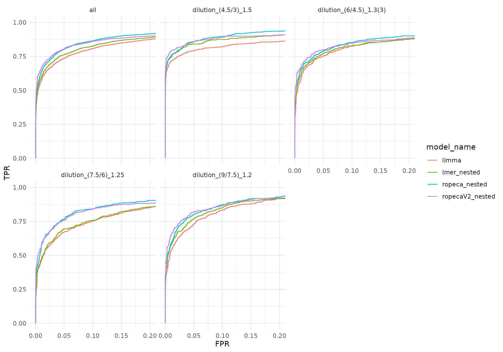
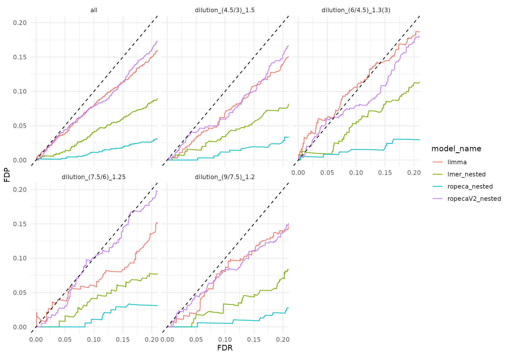

vignettes/Benchmark_ropeca.Rmd
Benchmark_ropeca.RmdROPECA summarises peptide-level contrasts per protein: the protein fold change is the median peptide fold change, and the protein p-value comes from the median of the signed peptide p-values. prolfqua has two versions:
ropeca_nested: the median signed p-value is tested
against a beta distribution, with at most 10 peptides counted. This null
is conservative for independent peptides, and the peptides of a protein
are not independent: they share the protein’s sample-to-sample
variation, which makes proteins with many peptides more
significant.ropecaV2_nested: the moderated peptide t-statistics are
converted to normal scores, and their median is tested against its exact
null distribution, the median of n normal scores with pairwise
correlation rho. rho is estimated once per dataset from the residuals of
the peptide models.If the p-values are calibrated, about 5% of the proteins that do not
change have p < 0.05, whatever their number of peptides. We check
this on simulated data and on the human proteins of IonStar, which do
not change between dilutions, and compare the ranking of the E. coli
proteins with lmer_nested and with limma on
median-polish protein intensities.
1000 proteins each with 2, 3, 5, 10 or 20 peptides, measured in 4 + 4
samples; no protein changes. The peptides of a protein share a sample
effect, and the share of the peptide variance it explains, rho, differs
between proteins, drawn from Beta(2, 4) (mean 0.33).
ropeca_nested is computed from the same peptide models as
ropecaV2_nested.
simulate_correlated_peptides <- function(n_prot_per_count, peptide_counts, seed = 1) {
set.seed(seed)
samples <- paste0(rep(c("Ctrl", "A"), each = 4), "_V", 1:4)
n_prot <- n_prot_per_count * length(peptide_counts)
proteins <- data.frame(
protein_Id = sprintf("P%05d", seq_len(n_prot)),
n_peptides = rep(peptide_counts, each = n_prot_per_count),
rho = stats::rbeta(n_prot, 2, 4)
)
peptides <- proteins[rep(seq_len(n_prot), proteins$n_peptides), ]
peptides$peptide_Id <- paste0(
peptides$protein_Id, "_",
stats::ave(seq_len(nrow(peptides)), peptides$protein_Id, FUN = seq_along)
)
data <- peptides[rep(seq_len(nrow(peptides)), each = length(samples)), ]
data$sampleName <- rep(samples, nrow(peptides))
sample_effect <- stats::rnorm(n_prot * length(samples))
effect_index <- (match(data$protein_Id, proteins$protein_Id) - 1) * length(samples) +
match(data$sampleName, samples)
data$abundance <- 20 + sqrt(data$rho) * sample_effect[effect_index] +
sqrt(1 - data$rho) * stats::rnorm(nrow(data))
data$sample <- data$sampleName
data$group_ <- sub("_V[0-9]$", "", data$sampleName)
data$isotopeLabel <- "light"
data$qValue <- 0
data$nr_children <- 1
data
}
sim <- simulate_correlated_peptides(1000, c(2, 3, 5, 10, 20))
sim_config <- prolfqua::sim_lfq_data_peptide_config(n_proteins = 2)$config
lfq_sim <- prolfqua::LFQData$new(
sim[, c("sample", "sampleName", "group_", "isotopeLabel", "protein_Id", "peptide_Id",
"abundance", "qValue", "nr_children")],
sim_config
)
sim_contrast <- c(A_vs_Ctrl = "group_A - group_Ctrl")
fa_sim_v2 <- prolfqua::build_contrast_analysis(lfq_sim, "~ group_", sim_contrast, method = "ropecaV2_nested")
sim_v1 <- prolfqua::ContrastsROPECA$new(prolfqua::Contrasts$new(fa_sim_v2$model, sim_contrast))$get_contrasts()The estimated peptide correlation is 0.333.
n_peptides_sim <- unique(sim[, c("protein_Id", "n_peptides")])
dplyr::bind_rows(
dplyr::tibble(model = "ropeca_nested", protein_Id = sim_v1$protein_Id, p.value = sim_v1$beta.based.significance),
dplyr::tibble(model = "ropecaV2_nested", protein_Id = fa_sim_v2$get_contrasts()$protein_Id,
p.value = fa_sim_v2$get_contrasts()$p.value)
) |>
dplyr::inner_join(n_peptides_sim, by = "protein_Id") |>
dplyr::group_by(model, n_peptides) |>
dplyr::summarise(p_below_0.05 = mean(p.value < 0.05), .groups = "drop") |>
tidyr::pivot_wider(names_from = "model", values_from = "p_below_0.05") |>
knitr::kable(digits = 3, caption = "Simulation, no protein changes: share of p < 0.05 by number of peptides (1000 proteins each).")| n_peptides | ropecaV2_nested | ropeca_nested |
|---|---|---|
| 2 | 0.060 | 0.037 |
| 3 | 0.050 | 0.054 |
| 5 | 0.055 | 0.071 |
| 10 | 0.060 | 0.082 |
| 20 | 0.067 | 0.071 |
ropeca_nested becomes more significant with the number
of peptides until its 10-peptide cap. ropecaV2_nested stays
close to 0.05; because rho differs between proteins and the method uses
one pooled value, its share still rises slightly with the number of
peptides.
Same preprocessing as in the Benchmark_hurdle vignette:
decoys and contaminants removed, proteins with at least two peptides,
log2 and robust scaling on the human proteins, median polish to protein
level for limma.
ionstar_ground_truth <- list(
id_column = "protein_id",
positive = list(label = "ECOLI", pattern = "ECOLI"),
negative = list(label = "HUMAN", pattern = "HUMAN")
)
ionstar_contrasts <- c(
"dilution_(9/7.5)_1.2" = "dilution.e - dilution.d",
"dilution_(7.5/6)_1.25" = "dilution.d - dilution.c",
"dilution_(6/4.5)_1.3(3)" = "dilution.c - dilution.b",
"dilution_(4.5/3)_1.5" = "dilution.b - dilution.a"
)
datadir <- file.path(find.package("prolfquadata"), "quantdata")
inputMQfile <- file.path(datadir, "MAXQuant_IonStar2018_PXD003881.zip")
inputAnnotation <- file.path(datadir, "annotation_Ionstar2018_PXD003881.xlsx")
mqdata <- list()
mqdata$data <- prolfquapp::tidyMQ_Peptides(inputMQfile)
mqdata$config <- create_mq_peptide_config()
annotation <- readxl::read_xlsx(inputAnnotation)
res <- dplyr::inner_join(mqdata$data, annotation, by = "raw.file")
mqdata$config$factors[["dilution."]] <- "sample"
mqdata$config$factors[["run_Id"]] <- "run_ID"
mqdata$config$factor_depth <- 1
mqdata$data <- prolfqua::setup_analysis(res, mqdata$config)
lfqdata_mq <- prolfqua::LFQData$new(mqdata$data, mqdata$config)
lfqdata_mq$set_data(lfqdata_mq$data_long() |> dplyr::filter(!grepl("^REV__|^CON__", protein_Id)))
lfqdata_mq$filter_proteins_by_peptide_count()
lfqdata_mq$remove_small_intensities()
tr <- lfqdata_mq$get_Transformer()
subset_h <- lfqdata_mq$get_copy()
subset_h$set_data(subset_h$data_long() |> dplyr::filter(grepl("HUMAN", protein_Id)))
subset_h <- subset_h$get_Transformer()$log2()$lfq
lfqdataNorm_mq <- tr$log2()$robscale_subset(lfqsubset = subset_h)$lfq
agg_mq <- lfqdataNorm_mq$get_Aggregator()
agg_mq$aggregate()
lfqProt_mq <- agg_mq$lfq_agg
fa_ropeca <- prolfqua::build_contrast_analysis(
lfqdataNorm_mq, "~ dilution.", ionstar_contrasts, method = "ropeca_nested")
fa_ropecaV2 <- prolfqua::build_contrast_analysis(
lfqdataNorm_mq, "~ dilution.", ionstar_contrasts, method = "ropecaV2_nested")
fa_lmer <- prolfqua::build_contrast_analysis(
lfqdataNorm_mq, "~ dilution. + (1 | peptide_Id) + (1 | sampleName)", ionstar_contrasts,
method = "lmer_nested")
fa_limma <- prolfqua::build_contrast_analysis(
lfqProt_mq, "~ dilution.", ionstar_contrasts, method = "limma")
models <- list(
ropeca_nested = fa_ropeca,
ropecaV2_nested = fa_ropecaV2,
lmer_nested = fa_lmer,
limma = fa_limma
)The estimated correlation of the peptides of a protein is 0.003. The IonStar samples are technical replicates of one digest, so a protein varies hardly at all between samples beyond its peptides’ measurement noise, and its peptides are nearly uncorrelated. These data therefore test the null distribution for independent peptides; the simulation above covers correlated peptides.
The human proteins do not change between dilutions, so about 5% of their p-values should fall below 0.05, and 1% below 0.01, in every peptide-count bin. The number of peptides is counted per protein over all samples.
n_peptides <- lfqdataNorm_mq$data_long() |>
dplyr::filter(!is.na(.data[[lfqdataNorm_mq$response()]])) |>
dplyr::group_by(protein_Id) |>
dplyr::summarise(n_peptides = dplyr::n_distinct(peptide_Id), .groups = "drop")
human <- dplyr::bind_rows(lapply(names(models), function(name) {
dplyr::mutate(dplyr::ungroup(models[[name]]$get_contrasts()), model = name)
})) |>
dplyr::filter(grepl("HUMAN", protein_Id)) |>
dplyr::inner_join(n_peptides, by = "protein_Id") |>
dplyr::mutate(
model = factor(model, levels = names(models)),
peptides = cut(
n_peptides, c(0, 1, 3, 5, 10, 20, Inf),
labels = c("1", "2-3", "4-5", "6-10", "11-20", ">20"))
)
human |>
dplyr::group_by(peptides, model) |>
dplyr::summarise(
proteins = dplyr::n_distinct(protein_Id),
p_below_0.05 = mean(p.value < 0.05, na.rm = TRUE),
p_below_0.01 = mean(p.value < 0.01, na.rm = TRUE),
.groups = "drop") |>
tidyr::pivot_wider(names_from = "model", values_from = c("p_below_0.05", "p_below_0.01")) |>
knitr::kable(digits = 3, caption = "Human proteins, all four contrasts: share of p-values below 0.05 and 0.01, by number of peptides.")| peptides | proteins | p_below_0.05_ropeca_nested | p_below_0.05_ropecaV2_nested | p_below_0.05_limma | p_below_0.05_lmer_nested | p_below_0.01_ropeca_nested | p_below_0.01_ropecaV2_nested | p_below_0.01_limma | p_below_0.01_lmer_nested |
|---|---|---|---|---|---|---|---|---|---|
| 1 | 120 | 0.069 | NA | NA | NA | 0.013 | NA | NA | NA |
| 1 | 109 | NA | 0.095 | NA | NA | NA | 0.026 | NA | NA |
| 1 | 121 | NA | NA | 0.094 | NA | NA | NA | 0.041 | NA |
| 2-3 | 1138 | 0.018 | NA | NA | NA | 0.002 | NA | NA | NA |
| 2-3 | 1132 | NA | 0.051 | NA | NA | NA | 0.009 | NA | NA |
| 2-3 | 1115 | NA | NA | NA | 0.030 | NA | NA | NA | 0.006 |
| 2-3 | 1139 | NA | NA | 0.048 | NA | NA | NA | 0.010 | NA |
| 4-5 | 742 | 0.010 | 0.052 | 0.048 | 0.033 | 0.002 | 0.009 | 0.010 | 0.006 |
| 6-10 | 842 | 0.003 | 0.043 | 0.034 | 0.034 | 0.000 | 0.008 | 0.006 | 0.004 |
| 11-20 | 494 | 0.001 | 0.041 | 0.033 | 0.029 | 0.000 | 0.007 | 0.004 | 0.002 |
| >20 | 189 | 0.000 | 0.038 | 0.036 | 0.022 | 0.000 | 0.009 | 0.003 | 0.004 |
With nearly independent peptides, the beta null of
ropeca_nested is far too conservative, more so the more
peptides a protein has. Proteins with a single observed peptide get that
peptide’s moderated p-value from ropecaV2_nested; their
share is close to that of limma on the same proteins.
Each method is scored on its own protein × contrast rows.
bench <- function(data, method, description) {
res <- write_contrast_results(
data,
path = file.path(tempdir(), paste0("ropeca_IonStar_MQ_", method)),
metadata = list(
dataset = "IonStar_MaxQuant",
method = method,
method_description = description,
input_file = "MAXQuant_IonStar2018_PXD003881.zip/peptides.txt",
software_version = paste0("prolfqua ", packageVersion("prolfqua")),
date = as.character(Sys.Date()),
ground_truth = ionstar_ground_truth))
benchmark_from_result(res)
}
benchmarks <- list(
bench(fa_ropeca$get_contrasts(), "ropeca_nested", "ROPECA, beta null of the median signed p-value"),
bench(fa_ropecaV2$get_contrasts(), "ropecaV2_nested", "ROPECA, correlation-aware null of the median z-score"),
bench(fa_lmer$get_contrasts(), "lmer_nested", "mixed model, peptide and sample random effects"),
bench(fa_limma$get_contrasts(), "limma", "limma on median-polish proteins")
)
dplyr::bind_rows(lapply(benchmarks, function(b) b$summary_metrics())) |>
dplyr::filter(.data$score == "scaled.p_value") |>
knitr::kable(digits = 3, caption = "Geometric mean over contrasts of AUC, partial AUC and average precision for scaled.p_value.")| model_name | score | AUC | pAUC_10 | pAUC_20 | AP | pAP_50 | pAP_80 | n_total |
|---|---|---|---|---|---|---|---|---|
| ropeca_nested | scaled.p_value | 93.621 | 77.041 | 83.450 | 85.915 | 98.918 | 95.378 | 4092.75 |
| ropecaV2_nested | scaled.p_value | 93.697 | 77.835 | 83.237 | 86.206 | 99.159 | 96.191 | 4092.75 |
| lmer_nested | scaled.p_value | 93.034 | 73.011 | 79.731 | 83.234 | 98.107 | 93.298 | 3980.00 |
| limma | scaled.p_value | 91.635 | 70.387 | 77.584 | 81.185 | 97.750 | 91.889 | 4113.75 |
roc <- dplyr::bind_rows(lapply(benchmarks, function(b) b$get_confusion_benchmark())) |>
dplyr::filter(.data$what == "scaled.p_value")
ggplot2::ggplot(roc, ggplot2::aes(x = .data$FPR, y = .data$TPR, color = .data$model_name)) +
ggplot2::geom_line() +
ggplot2::facet_wrap(~contrast) +
ggplot2::coord_cartesian(xlim = c(0, 0.2)) +
ggplot2::theme_minimal()
ROC curves for scaled.p_value up to 20% FPR.
fdp <- dplyr::bind_rows(lapply(benchmarks, function(b) b$get_confusion_FDRvsFDP()))
ggplot2::ggplot(fdp, ggplot2::aes(x = .data$scorecol, y = .data$FDP, color = .data$model_name)) +
ggplot2::geom_line() +
ggplot2::geom_abline(linetype = "dashed") +
ggplot2::facet_wrap(~contrast) +
ggplot2::coord_cartesian(xlim = c(0, 0.2), ylim = c(0, 0.2)) +
ggplot2::labs(x = "FDR", y = "FDP") +
ggplot2::theme_minimal()
False discovery proportion against the nominal FDR; the diagonal marks perfect calibration.
dplyr::bind_rows(lapply(benchmarks, function(b) b$calibration_metrics())) |>
dplyr::filter(.data$contrast == "average") |>
knitr::kable(digits = 3, caption = "FDR calibration for FDR <= 0.2, averaged over contrasts: mean absolute and mean signed deviation of FDP from FDR.")| model_name | contrast | score | FDP_cal | FDP_bias |
|---|---|---|---|---|
| ropeca_nested | average | p_value_adjusted | 0.033 | -0.033 |
| ropecaV2_nested | average | p_value_adjusted | 0.009 | -0.008 |
| lmer_nested | average | p_value_adjusted | 0.032 | -0.032 |
| limma | average | p_value_adjusted | 0.013 | -0.009 |